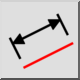
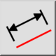
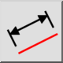
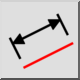
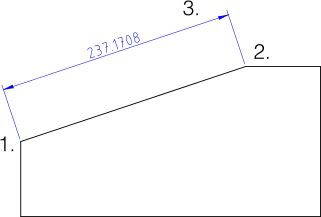

Alinhado
Barra de Ferramenta / Ícone:
 

Menu: Dimensão > Alinhado
Atalho: D, A
Comandos: dimaligned | da
Esta é uma tradução automática.
Barra de Ferramenta / Ícone:
 

Menu: Dimensão > Alinhado
Atalho: D, A
Comandos: dimaligned | da
Cria cotações alinhadas. As cotações alinhadas medem geralmente a largura de
uma linha existente. A linha de cota é sempre paralela à linha delimitada pelas
linhas de extensão.
